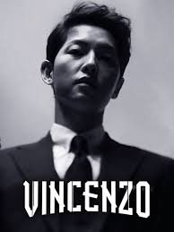

This is my best k-drama ever beacuse the story revoulved around the Korean-Italian Mafia lawyer and how it gives an unrivaled conglomerate a taste of its own medicine with a side of justice.
Money Heist is a Spanish heist crime drama television
I love the character in Money Heist that is "The Professor" ☺☺

The Playlist is the fictionalized story of the birth of the Swedish music streaming company Spotify, along with its early challenges